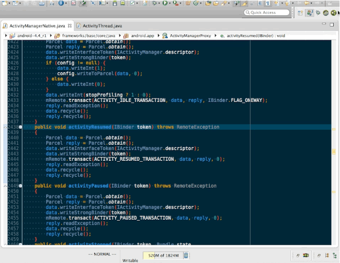
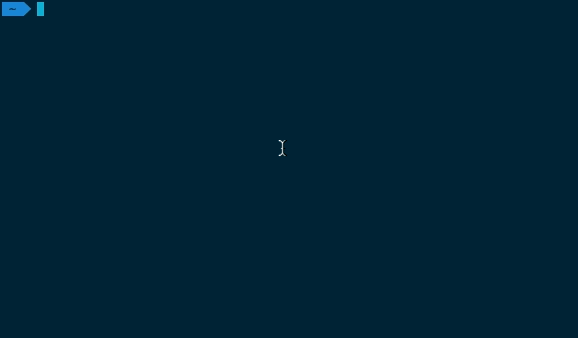

Vagrant를 활용해
AOSP 개발환경 꾸리기
조금 더 편하게...
by chitacan오늘 이야기 할 내용
- AOSP 왜 빌드 해봐야 하나?
- AOSP 빌드환경을 갖추기
- AOSP 빌드 & 실행
About Me
- Github

- Android, Chromium, Node.js
- Vim, Tmux, Vagrant
- BitTorrent, reveal.js
- 자동화 with Hubot
AOSP
(Android Open Source Project)
빌드, 해보셨나요?
어렵진 않습니다.
단지 조금, 아주 조금 귀찮을 뿐이죠...
$ curl https://storage.googleapis.com/git-repo-downloads/repo > ~/bin/repo
$ chmod a+x ~/bin/repo
$ mkdir android-5.0.2_r1 && cd android-5.0.2_r1
$ repo init -u https://android.googlesource.com/platform/manifest -b android-5.0.2_r1
$ repo sync
$ . build/envsetup
$ lunch
$ make
빌드하면 뭐가 좋나요?
내 손으로 빌드한 운영체제!!
아무 프로세스나 디버그!!

뷰 구조도!!
root@
And More
뭐가 좋냐구요?
AOSP 를 직접 빌드하시면,
AOSP 코드를 탐험하기가 완전 편해집니다.
AOSP 빌드환경은 가상머신이 편합니다.
- AOSP 버전별로 독립적인 개발환경 유지
- suspend 기능을 활용해 내가 개발하던 환경을 그대로 저장
하지만,
설정하는 건 지겹습니다.
가상머신 설정
+ 설치시간...

AOSP 빌드에 필요한 패키지들
- repo
- JDK 7
- git
- make
- gnupg
- build-essential
- 외 20개의 패키지
다른 도구들도...
- tmux
- vim + plugins (unite, fugitive...)
- node.js
- 등등등
AOSP는 사정없이 릴리즈!!
- android-5.0.0_r1
- android-5.0.0_r2
- android-5.0.1_r1
- android-5.0.2_r1
- 등등
버전별로 이걸 다 해야되?
아놔...
AOSP 개발환경이 설정된
가상머신을 막 찍어낼 수 없을까?
Vagrant
- vmware, virtualbox의 가상머신 생성과정을 단순화
- 텍스트 파일 기반으로 가상머신을 구성
- Windows, OSX, Debian, Ubuntu, CentOS 지원
- 1.5 업데이트(vagrant share, vagrant cloud)
Vagrant 시작하기
- Virtualbox & Vagrant 설치
(vagrantup.com) - Vagrantfile 작성
- vagrant up
- vagrant ssh
장점
- box, Vagrantfile 을 활용해 가상머신을 막 찍어낼 수 있다!!
- 기존의 box에 도구를 설치해 다시 box로 패키징 & 배포 할 수 있다!!
그럼,
AOSP 개발환경이 세팅된 box를 만들고,
드롭박스로 공유하면 편하지 않을까 ?
그래서 만들었습니다.
# -*- mode: ruby -*-
# vi: set ft=ruby :
VAGRANTFILE_API_VERSION = "2"
Vagrant.configure(VAGRANTFILE_API_VERSION) do |config|
config.vm.box = "robust-android-v1"
config.vm.box_url = "http://goo.gl/ftM2P9"
config.vm.provider :virtualbox do |vb|
vb.name = "robust-android-v1"
vb.customize ["modifyvm", :id, "--memory", "1024"]
vb.customize ["modifyvm", :id, "--cpus", "1"]
vb.customize ["modifyvm", :id, "--cpuexecutioncap", "80"]
end
end
뭐가 들어있나?
- AOSP 개발환경
- android-4.4_r1, android-4.2_r1
- vi + plugins, tmux 등등등
- 그래서 용량이 1.5 GB
실행하기
$ wget http://goo.gl/OnTHI4 -O Vagrantfile
$ vagrant up
$ vagrant ssh
vagrant$ cd workspace/android-4.4_r1/
vagrant$ repo sync
vagrant$ . build/envsetup
vagrant$ lunch
vagrant$ make
robust-android-v1.box 의 문제
- 박스의 내용이 변경되면 다시 패키징해서 업로드
- 1.5 GB 의 용량 덕택에 업 & 다운로드 시간이
- 드롭박스의 파일공유에는 트래픽 제한이 있음
- 모든 환경이 설정된 box를 관리하는 건 빡시다!!
설정과정도 분리하고 싶다!!
- box는 순정상태로 두고,
- 가상머신이 생성될 때 환경을 설정할 수 있다면?
Provisioning
- 시스템 구성(패키지 & 도구 설치, 설정 변경, 파일 생성 등)
- vagrant 는 shell script, chef, puppet 등을 지원
Puppet?
- 시스템 구성 자동화 도구
- 시스템을 구성하는데 필요한 것들을 파일(*.pp)에 선언
- vagrant, Ubuntu 와 완전 잘 연동
- 이미 설치되어 있거나, 생성된 리소스가 있으면 그대로
- Github 이 쓴다고!?(Boxen)
*.pp
file { 'one':
path => '/vagrant/one',
content => 'one',
}
file { 'two':
path => '/vagrant/two',
source => '/vagrant/one',
}
File['one'] -> File['two']
vagrant + puppet
- box는 vagrant cloud의 hashicorp/precise64를 사용
- AOSP 개발환경을 설정하는 puppet 스크립트 작성
- 이제 Vagrantfile, puppet 스크립트만 있으면 AOSP 빌드 환경이
Vagrant와puppet 연동하기
# -*- mode: ruby -*-
# vi: set ft=ruby :
VAGRANTFILE_API_VERSION = "2"
Vagrant.configure(VAGRANTFILE_API_VERSION) do |config|
config.vm.box = "hashicorp/precise64"
config.vm.provider :virtualbox do |vb|
vb.customize ["modifyvm", :id, "--memory", "1024"]
vb.customize ["modifyvm", :id, "--cpus", "1"]
vb.customize ["modifyvm", :id, "--cpuexecutioncap", "80"]
end
config.vm.provision "puppet" do |puppet|
puppet.module_path = "modules"
puppet.manifests_path = "manifests"
puppet.manifest_file = "default.pp"
puppet.options = ['--verbose', '--debug']
end
end
aosp-env
https://github.com/chitacan/aosp-env
- 빌드환경은 puppet 스크립트로 설정
- aospversion 값을 통해 빌드할 aosp 버전 설정
config.vm.provision "puppet" do |puppet|
puppet.facter = {
"aospversion" => "android-5.0.2_r1"
}
end
실행하기
$ git clone https://github.com/chitacan/aosp-env
$ cd aosp-env
$ vagrant up
vagrant + puppet
- box 사이즈 : 1.5 GB 에서 300 MB 로 감소
- 설정 파일의 버전관리가 가능
- 하지만, 머신의 최초 구동 시간은 늘어남
빌드해 봅시다.
우선 소스를...
$ vagrant ssh
vagrant$ cd workspace/android-5.0.2_r1/
vagrant$ repo sync
vagrant$ . build/envsetup
vagrant$ lunch
vagrant$ make
build/envsetup
유용한 도구들이 추가됩니다.
vagrant$ . build/envsetup
vagrant$ hmm
Invoke ". build/envsetup.sh" from your shell to add the following functions to your environment:
- lunch: lunch -
- tapas: tapas [ ...] [arm|x86|mips|armv5] [eng|userdebug|user]
- croot: Changes directory to the top of the tree.
- m: Makes from the top of the tree.
- mm: Builds all of the modules in the current directory, but not their dependencies.
- mmm: Builds all of the modules in the supplied directories, but not their dependencies.
- mma: Builds all of the modules in the current directory, and their dependencies.
- mmma: Builds all of the modules in the supplied directories, and their dependencies.
- cgrep: Greps on all local C/C++ files.
- jgrep: Greps on all local Java files.
- resgrep: Greps on all local res/*.xml files.
- godir: Go to the directory containing a file.
Look at the source to view more functions. The complete list is:
...
NEXUS 5 이미지 빌드하기
vagrant$ . build/envsetup
vagrant$ lunch
vagrant$ make -j8 updatepackage
vagrant$ cp out/target/product/hammerhead/full_hammerhead-img-eng.vagrant.zip /vagrant/
vagrant$ exit
$ adb reboot bootloader
$ fastboot -w update full_hammerhead-img-eng.vagrant.zip
빌드 시간은?
i7 -2600 3.4 GHz, 16 GB, HDD 1 TB (7200 rpm)
- 가상머신 설정
config.vm.provider "virtualbox" do |vb|
vb.customize ["modifyvm", :id, "--memory", (1024*12).to_s]
vb.customize ["modifyvm", :id, "--cpus", 8]
vb.customize ["modifyvm", :id, "--cpuexecutioncap", 90]
end
단말이 없으면 어떻하나요?
에뮬레이터를 빌드하시면 됩니다.(디버깅엔 더 편합니다.)
vagrant$ . build/envsetup
vagrant$ lunch
vagrant$ make
vagrant$ emulator -no-window
Side Project
- ChatOps with hubot-vagrant
- Hack adb with let's dig adb
지금까지
- vagrant (+puppet) 을 활용한 AOSP 개발환경 생성
- 빌드, 실행시 사용할 수 있는 도구
TODO
- aosp-env를 puppet module로 작성?
- 더 많은 Provider 지원 (Amazon EC2?)
- Build Notifier (with slack?)
- Source Exports